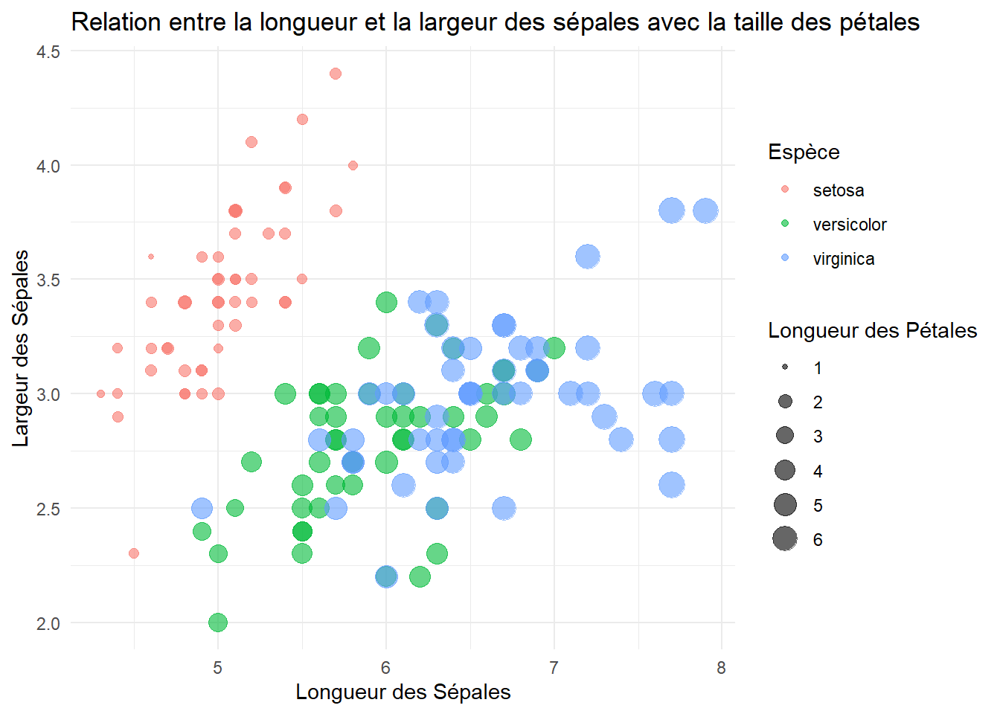

Code
```{r}
library(tidyverse)
library(nycflights13)
library(gapminder)
library(datasets)
#install.packages("tidyverse", "nycflights13", "gapminder")
```Chargez la librairie tidyverse
Pour tout autre package autre que tidyverse, assurez vous de les installer avant d’utiliser la librairie. Ex. install.packages(gapminder)
```{r}
library(tidyverse)
library(nycflights13)
library(gapminder)
library(datasets)
#install.packages("tidyverse", "nycflights13", "gapminder")
```Données: data(diamonds)
Variables utilisées:
carat: Carat
price: Prix en dollar
cut: Qualité de la taille
clarity: I1, SI2, SI1, VS1, VS2, etc.
diamonds %>%
ggplot(aes(x = carat, y = price, color = cut)) +
geom_point(alpha = 0.5) +
facet_wrap(~clarity) +
labs(title = "Prix des diamants en fonction du carat, de la qualité de la taille et de la clarté",
x = "Carat", y = "Prix ($)", color = "Qualité de la Taille") +
theme_minimal()
Données: data(mpg)
Variables:
displ: Cylindré en litre
hwy: Miles par Galon
class: Classe de véhicule
manufacturer: dodge, ford, toyota, volkswagen, etc.
mpg %>%
filter(manufacturer %in% c("dodge", "ford", "toyota", "volkswagen")) %>%
ggplot(aes(x = displ, y = hwy, color = class)) +
geom_point(size = 2, alpha = 0.6) +
geom_smooth(method = "lm", se = FALSE) +
facet_wrap(~manufacturer, scales = "free_x") +
labs(title = "Relation entre la cylindrée et la consommation sur autoroute",
x = "Cylindrée (litres)", y = "Miles par Gallon", color = "Classe de Véhicule") +
theme_light() +
theme(legend.position = "top")
Données: library(nycflights13) et data(flights)
Variables:
dep_delay: Retard au départ en minutes
arr_delay: Retard à l’arrivée en minutes
flights %>%
filter(!is.na(dep_delay), !is.na(arr_delay)) %>%
ggplot(aes(x = dep_delay, y = arr_delay)) +
geom_hex(bins = 30) +
labs(title = "Relation entre les retards au départ et à l'arrivée",
x = "Retard au Départ (min)", y = "Retard à l'Arrivée (min)") +
theme_bw()
Données: iris data(iris)
Variables:
Sepal.Length: Longueur du sépale
Sepal.Width: Largeur du sépale
Species: Espèce de la fleure
Petal.Length: Longueur de la pétale
iris %>%
ggplot(aes(x = Sepal.Length, y = Sepal.Width, color = Species, size = Petal.Length)) +
geom_point(alpha = 0.6) +
labs(title = "Relation entre la longueur et la largeur des sépales avec la taille des pétales",
x = "Longueur des Sépales", y = "Largeur des Sépales", color = "Espèce", size = "Longueur des Pétales") +
theme_minimal()
gapminder)Données: library(gapminder) et data(gapminder)
Variables:
gdpPercap: PIB par habitant
lifeExp: Espérance de vie
pop: Taille de la population
continent: Continent
gapminder %>%
ggplot(aes(x = gdpPercap, y = lifeExp, size = pop, color = continent)) +
geom_point(alpha = 0.6) +
scale_x_log10() +
labs(title = "Relation entre le PIB par habitant, l'espérance de vie et la population",
x = "PIB par Habitant (échelle logarithmique)", y = "Espérance de Vie", size = "Population", color = "Continent") +
theme_light()
Données: data(economics)
Variables:
date: Date
unemploy: Taux de chômage
pop: Taille de la population
economics %>%
ggplot(aes(x = date, y = unemploy/pop)) +
geom_line(color = "blue", size = 1) +
labs(title = "Taux de chômage aux États-Unis au fil du temps",
x = "Année", y = "Taux de Chômage") +
theme_classic()Données: data(txhousing)
variables:
year: Années
sales: Ventes immobilières au Texas
city: Villes
Note: Il est nécessaire de faire la moyenne des vente par an.
txhousing %>%
filter(city %in% c("Austin", "Collin County",
"Dallas", "Houston", "San Antonio")) %>%
summarise(sales = mean(sales),
.by = c(city, year)) %>%
ggplot(aes(x = year, y = sales, color = city)) +
geom_line() +
labs(title = "Ventes immobilières moyenne au Texas par ville",
x = "Année", y = "Ventes", color = "Ville") +
theme_minimal() +
theme(legend.position = "bottom")datasets)Données: library(datasets) et data(WorldPhones) et as_tibble(WorldPhones)
Variables:
region: Régions
n_phones: Nombre de téléphones
WorldPhones %>%
as_tibble() %>%
gather(region, n_phones) %>%
summarise(n_phones = sum(n_phones),
.by = region) %>%
ggplot(aes(region, n_phones, fill = region)) +
geom_col(color = "white", alpha = 0.6) +
geom_label(aes(label = n_phones)) +
labs(title = "Nombre de téléphones par région dans le monde au fil du temps",
x = "Année", y = "Nombre de Téléphones", fill = "Région") +
theme_dark()datasets)Données: library(datasets) et data(ChickWeight)
Variables:
Time: Temps en jour
weight: Poids
Chick: Type de poussin
Diet: Régime alimentaire
ChickWeight %>%
ggplot(aes(x = Time, y = weight, group = Chick, color = Diet)) +
geom_line(alpha = 0.6) +
labs(title = "Poids des poussins au fil du temps par régime alimentaire",
x = "Temps (jours)", y = "Poids", color = "Régime Alimentaire") +
theme_minimal()Données: data(mtcars)
Variables:
wt: Poids du véhicule
mpg: Miles par Gallon
gear: Engrenage
qsec: Quart de Mile en seconde
mtcars %>%
ggplot(aes(x = wt, y = mpg, color = factor(gear), size = qsec)) +
geom_point(alpha = 0.6) +
labs(title = "Relation entre le poids, la consommation et la vitesse de quart de mile",
x = "Poids (1000 lbs)", y = "Miles par Gallon",
color = "Engrenages", size = "Quart de Mile (s)") +
theme_light()